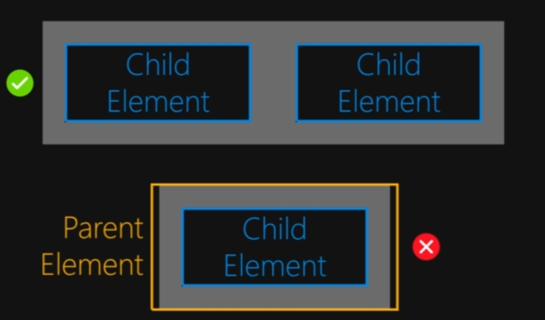

- Margin is used to separate child elements and not create space between parent element and child element, for that padding is used.
- To avoid margin collapsing we can use flexbox, grid lyaout or even padding in some cases.
- Negative margins allows us to reduce the space bw two elements, element is pulled towards the other element.
- Only Vertical margins are collapsed, no horizontals